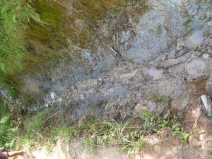

bangalug 
/baŋalug/
n.
“gully”
n.
(bangalug) a gully
Mallambeg ka me pinamula dutu te bangalug su meupiya ka tanè.
The plants in the gully there are healthy because the soil is good.
Syn. migleb-eng
Eng. gully; valley; ravine
Tag. lambsák; labák
Ceb. kapatagans
Ilo.: tanáp
OCM: Ethnogeography (823), Topography and Geology (133)
DDP: Valley (1.2.1.4)
Online dict status: -
Usage level: R
v.
for the land (egbangalug, migbangalug/imbangalug, eg><ø-) to have a gully
Due nakita ku ne seg-ew dutu te imbangalug.
I have seen a poisonous tree there in the gully.
Seeya a egbebaley te imbangalug.
I build my home there at the valley.
Syn. migleb-eng
Eng. gully, to have; valley, to have; ravine, to have
Tag. lambák; labák
Ceb. kapatagan
Ilo.: tanáp
OCM: Ethnogeography (823), Topography and Geology (133)
DDP: Valley (1.2.1.4)
Online dict status: -
Usage level: R
Updated by: RJH,AAA,RUL,NJK,QDL,RJH
Last updated: 19/Jan/2016
This page last updated: 03-Jan-2020
Copyright © 2009-2014, Matigsalug Language Christian Association, Inc